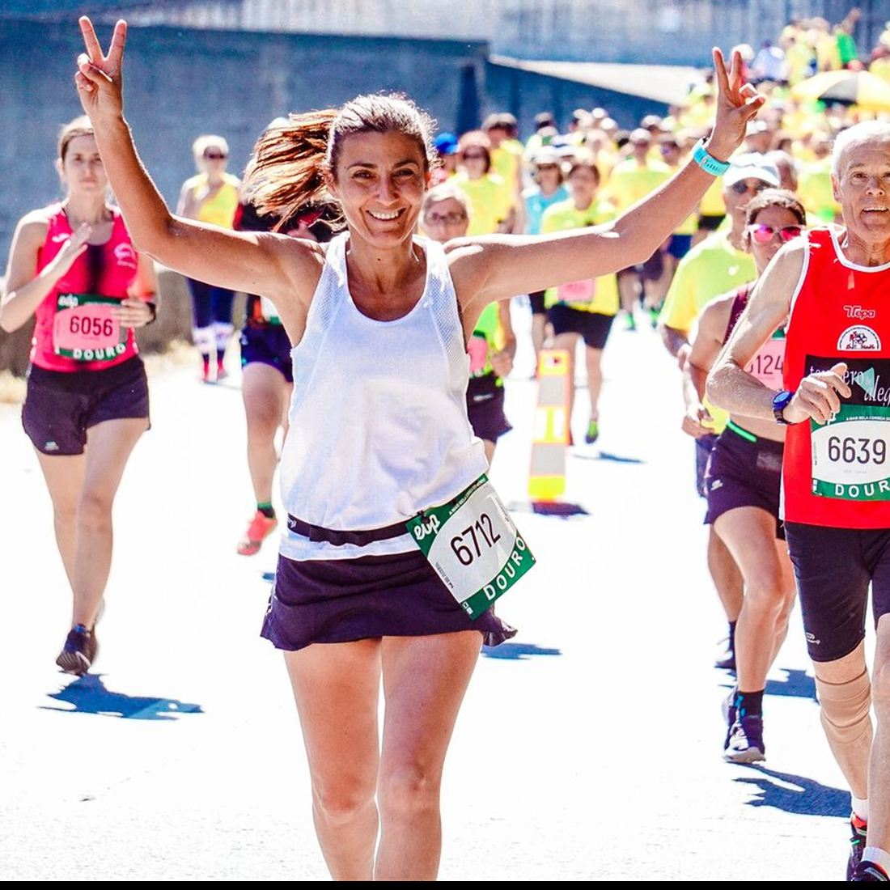

Kit Básico
R$66
- Número de peito
- Chip de cronometragem
- Medalha de metal na chegada
Para quem já tem a camisa do evento e quer só o essencial para correr e ser cronometrado.
Quero o básicoSerra do Cedro · Ceará
14 mar 2027 · Vale do Cedro · CE
5,2 km de cross country entre calçamento e chão batido. Largada às 6h30, na Academia Serra Azul, com a Serra do Cedro inteira no caminho.
Inscrições encerram em 28 de fevereiro
Largada e chegada: R. das Acácias, 240, Centro · Academia Serra Azul
A largada é no centro de Vale do Cedro e a chegada é no mesmo lugar — mas o caminho até lá não é plano, não é asfaltado do começo ao fim e não perdoa quem sai acelerando.
O percurso é misto, no formato cross country: trechos de calçamento e trechos de estrada de terra e chão batido. É corrida de rua com o tempero da serra, do jeito que a Serra Azul faz.
Ver o percursoMenores de 18 anos participam com autorização por escrito do responsável. A entrega de kits acontece só no dia 13, na Academia Serra Azul.
Saída do centro, estrada de terra no meio do caminho e a volta pela cidade. Um traçado curto, mas com a altimetria da Serra do Cedro cobrando em cada curva.
Largada e chegada na Academia Serra Azul, com hidratação no meio do trajeto.
O kit é retirado no sábado. A corrida é no domingo, cedo. Quem chega em cima da hora corre o risco de largar atrasado — e o cronômetro não espera.
O regulamento pede chegada com 1 hora de antecedência para as instruções finais.
Sábado 13/03
9h–16h
Academia Serra Azul. Só nesse dia e horário: não há entrega de kit no dia da prova. Pode retirar por outra pessoa com documento com foto do titular.
Domingo 14/03
5h30
Aquecimento, banheiros liberados e instruções finais da organização na área da largada.
6h30
5,2 km de percurso misto. Tempo limite de 1h30 para concluir.
Chegada
Medalha para quem completa o percurso. Troféus e premiação em dinheiro logo após a chegada dos primeiros colocados.
Kit Básico
R$66
Para quem já tem a camisa do evento e quer só o essencial para correr e ser cronometrado.
Quero o básicoKit Completo
R$86
60 anos ou mais paga metade. O desconto de 50% é validado pela data de nascimento no ato da inscrição — leve documento oficial com foto para confirmar.
Camisa: o tamanho é escolhido conforme a disponibilidade no momento da inscrição.
Inscrições até 28/02. Depois dessa data, inscrições tardias recebem número de peito genérico.
Premiação para os cinco primeiros da classificação geral, no masculino e no feminino, dividida entre atletas de Vale do Cedro e visitantes. Além disso, troféus por faixa etária.
Do 1º ao 5º colocado, no masculino e no feminino.
Quem sobe ao pódio da classificação geral não concorre à premiação por faixa etária. Premiação em dinheiro exclusiva para a geral.

O que mais perguntam no direct e no grupo, respondido direto pelo regulamento oficial.
Regulamento completoAs inscrições vão até 28 de fevereiro de 2027, pela plataforma oficial de inscrição. Depois dessa data, inscrições tardias recebem número de peito genérico, sem os dados personalizados.
Não. A entrega acontece só no sábado, 13 de março, das 9h às 16h, na Academia Serra Azul. Outra pessoa pode retirar, desde que apresente documento oficial com foto do titular.
14 anos completos até 31 de dezembro de 2027. Menores de 18 precisam de autorização por escrito dos responsáveis.
Tem: 50% no valor da inscrição. O sistema valida automaticamente pela data de nascimento; para confirmar, é preciso enviar documento oficial com foto.
Sim, até 28 de fevereiro, diretamente com a organização. Depois dessa data não há substituição de atleta, por nenhum motivo.
O chip é descartável, vem fixado no número de peito e não pode ser destacado. A classificação usa o tempo bruto, do sinal de largada até a linha de chegada.
Não, salvo autorização por escrito da organização. A participação é individual e não é permitido o auxílio de terceiros.
O reembolso pode ser pedido em até 7 dias corridos após o pagamento, por e-mail. Depois desse prazo, ou depois da retirada do kit, não há devolução.
Largada, chegada e retirada de kit no mesmo endereço, no centro de Vale do Cedro.
Academia Serra Azul
R. das Acácias, 240
Centro · Vale do Cedro – CE
CEP 62940-000
Referência: centro da cidade, na Serra do Cedro.
14 de março de 2027 · 6h30
Inscrições até 28 de fevereiro · Kits a partir de R$ 66